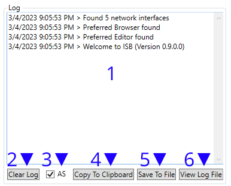
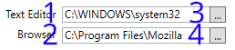
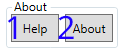
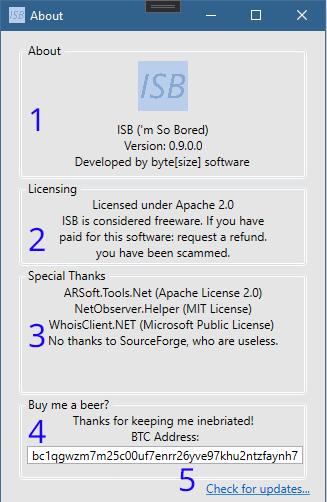
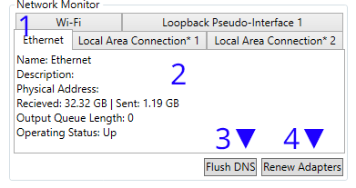

Développé par byte[size] Software.
Licence sous Apache 2.0
ISB (I'm so bored) est un utilitaire de test de stress réseau pour Windows (.NET 5.0)
| Attacks | Sniffing | Logging | Support |
|---|---|---|---|
| HTTP Flood | Port Scanning | Log to file | Comprehensive Documentation |
| UDP Flood | WHOIS Lookup | Log to clipboard | Discord support |
| TCP Flood | DNS Lookup | Dedicated UI Log | Email support |
| ICMP Flood | Traceroute | Surveillance du réseau | Vérification automatique des mises à jour |
Octet [taille] Logiciel: https://github.com/softbytesize
Page d'accueil: https://softbytesize.github.io/ISB/
Les sorties: https://github.com/softbytesize/ISB-Releases/releases
Languages: [english] [french] [spanish] (Natively written in English. Translations may be... inaccurate)
Avec la fenêtre principale ouverte, naviguez vers la section target Saisissez l'IP ou l'URL de votre cible (#1/#2). Sélectionnez-la avec le bouton "Set Target" (#4). En supposant qu'aucune erreur ne s'affiche (sinon: voir common errors): Sélectionnez votre type d'attaque dans la section attacks Définissez les variables de votre attaque (voir: http flood, udp flood, tcp flood, tcp port scan, icmp flood, slowloris). Appuyez sur "Start Attack"/"Start Scan" pour commencer, appuyez à nouveau pour arrêter l'attaque/le scan.
| 1. Barre de titre [Nom de l'application] - [Version] | 2. Métriques du processus: (de gauche à droite) 2a. Utilisation du CPU du processus: La quantité de CPU utilisée par l'application. 2b. Utilisation de la mémoire du processus: La quantité de mémoire est utilisée par l'application. 2c. Threads de processus: La quantité de Threads ouverts/utilisés par l'application. |
| 3. Voir target pour l'utilisation | 4. Voir log pour l'utilisation |
| 5. Voir target info pour l'utilisation | 6. Voir attacks pour l'utilisation |
| 7. Voir editors pour l'utilisation | 8. Voir about pour l'utilisation |
| 9. Voir networkmonitor pour l'utilisation |
Section de la fenêtre #3

| 1. URL ou IP de la cible. "https://example.com" par exemple. | 2. Port à cibler. Trouvez les ports couramment utilisés ici |
| 3. L'IP de la cible, lorsqu'elle est définie (#4 enfoncé) | 4 Définir la cible avec l'URL ou l'IP en #1 et le port en #2 |
Section de fenêtre #4
| 1. Fenêtre de journal. Éditera les messages et les erreurs. | 2. Efface la fenêtre de journal (pas le fichier journal) |
| 3. Bascule le défilement automatique de la fenêtre du journal. | 4. Copie la fenêtre du journal dans le presse-papiers. |
| 5. Enregistre la sortie de la fenêtre de journal dans le fichier (ISB log.log) | 6. Ouvre le fichier de journal s'il existe. |
Formatage: [date heure a/P] > *([titre de l'erreur] :) [message]
*(conditionnel)Section de la fenêtre #5

| 1. Effectue une WHOIS recherche sur la cible. | 2. Effectue une recherche d'enregistrements DNS sur la cible. |
| 3. Effectue une Traceroute sur la cible | 4. Ouvre la cible dans le navigateur* |
| 5. Ping la cible X fois. (#6) | 6. X fois pour envoyer un ping à la cible. (#5) |
Section fenêtre #6

| 1. Effectue une inondation HTTP sur la cible. Pour des informations sur l'utilisation cliquez ici |
2. Effectue un Flood UDP sur la cible. Pour des informations d'utilisation cliquez ici |
| 3. Effectue un Flood TCP sur la cible. Pour des informations d'utilisation cliquez ici |
4. Effectue un scan de port TCP sur la cible. Pour des informations d'utilisation cliquez ici |
| 5. Effectue une inondation ICMP sur la cible. Pour des informations sur l'utilisation cliquez ici |
6. Effectue une attaque Slowloris sur la cible. Pour des informations d'utilisation cliquez ici |
Section de fenêtre #6 Attaque #1

| 1. Défaut: '/' Définit le sous-site à utiliser lorsque le GET (#7) est activé* | 2. Définir l'intervalle (en millisecondes) entre l'envoi de paquets à la cible. |
| 3. Définir le temps (en millisecondes) pendant lequel le serveur cible doit garder la connexion ouverte | 4. La quantité de threads que l'application doit utiliser pour attaquer la cible |
| 5. Utiliser un sous-site aléatoire ? La longueur de la chaîne aléatoire peut être modifiée en #6 | 6. Sous-site aléatoire (#5) Longueur en octets Haut = plus lent (plus de données) / Bas = plus rapide (plus de trafic) |
| 7. Utiliser le protocole GET ? La valeur par défaut est le protocole POST. | 8. Faut-il attendre que le serveur réponde à la dernière requête envoyée ? |
| 9. Devons-nous déclarer l'encodage GZIP dans nos en-têtes ? "Accept-Encoding: gzip, deflate' | 10. Démarre/arrête l'attaque |
| 11. Sockets connectés avec succès | 12. Paquets envoyés avec succès |
| 13. Réponses de la cible reçues (si #8 est défini) | 14. Sockets/Packets qui n'ont pas réussi à s'ouvrir/envoyer |
| 15. En-têtes de sortie envoyés à la fenêtre de journal ?(Section de la fenêtre #7)** |
*Exemple: '/search?q=' Utilisé en conjonction avec Random Subsite (#5) et Use GET (#7) sondera continuellement la cible avec une requête de recherche aléatoire.
**Lorsqu'elle est activée ; cela provoquera une absence de réponse et un plantage de l'application. C'est un problème connu Veuillez ne pas le signaler à l'assistance..
Section de fenêtre #6 Attaque #2

| 1. Définir l'intervalle (en millisecondes) entre l'envoi de paquets à la cible. | 2. Définit la taille du tampon dans le paquet. |
| 3. La quantité de threads que l'application doit utiliser pour attaquer la cible | 4. Démarre/arrête l'attaque |
| 5. Sockets connectés avec succès | 6. Paquets envoyés avec succès |
| 7. Sockets/Packets qui n'ont pas réussi à s'ouvrir/envoyer |
Section de fenêtre #6 Attaque #3

| 1. Définissez l'intervalle (en millisecondes) entre l'envoi de paquets à la cible. | 2. Définit la taille du tampon dans le paquet. |
| 3. La quantité de threads que l'application devrait utiliser pour attaquer la cible | 4. Démarre/arrête l'attaque |
| 5. Sockets connectés avec succès | 6. Paquets envoyés avec succès |
| 7. Sockets/Packets qui n'ont pas réussi à s'ouvrir/envoyer |
Section de fenêtre #6 Attaque(ish) #4

| 1. Le premier port à scanner (1-35565) | 2. Le dernier port à scanner (1-35565) |
| 3. Le temps d'attente (en millisecondes) pour une réponse. | 4. Démarre/arrête le scan |
| 5. Total des ports OUVERTS | 6. Total des ports 'uknown' erreur présumée DOWN |
| 7. Total des ports 'refusés' erreur présumée DOWN | 8. Total des ports 'timed out' erreur présumée DOWN* |
| 9. Total des ports DOWN | 10. Sort "Port X UP" dans la fenêtre de journal (#4) |
Section de fenêtre #6 Attaque #5

| 1. Définir l'intervalle (en millisecondes) entre l'envoi de paquets à la cible. |
2. Définit le délai d'attente de la connexion actuelle. |
| 3. Définit la taille du tampon dans le paquet. | 4. La quantité de threads que l'application doit utiliser pour attaquer la cible |
| 5. Démarre/arrête l'attaque | 6. Paquets envoyés avec succès |
| 7. Paquets dont l'envoi a échoué |
Section de la fenêtre #6 Attaque #6

| 1. Définir l'intervalle (en millisecondes) entre l'envoi de paquets à la cible. |
2. La quantité de threads que l'application doit utiliser pour attaquer la cible |
| 3. Démarre/arrête l'attaque | 4. Paquets envoyés avec succès |
| 4. Paquets envoyés avec succès | 6. Paquets dont l'envoi a échoué |
Section fenêtre #7
| 1. Chemin d'accès à l'emplacement de l'éditeur de texte. Par défaut, c'est le système par défaut du registre. |
2. Chemin d'accès à l'emplacement si le navigateur web. Par défaut, c'est le système par défaut à partir du registre. |
| 3. Ouvre le Dialogue de fichier pour choisir l'éditeur de texte utilisé* | 4. Ouvre le Dialogue de fichier pour choisir le navigateur web utilisé* |
*Accepte: exe, .exe, *.exe
Section de fenêtre #8
| 1. Lance la fenêtre 'Aide'. Court-circuit clavier: F1 [Indice: la fenêtre d'aide affiche cette page] |
| 2. Localisation de la fenêtre 'A propos' Court-circuit clavier: F2 |
Fenêtre d'aide > Fenêtre Section #8-1

*Vous êtes ici... 50/50 de comment vous êtes arrivé ici*
A propos de la fenêtre > Fenêtre Section #8-2
| 1. Affiche le nom de l'application, la version et le développeur. |
| 2. Montre les licences en cours d'utilisation. Note: L'utilisation de ce logiciel implique un accord de licence. |
| 3. Montre les paquets utilisés, et accrédite ceux qui aident à développer/maintenir l'EIB |
| 4. Indique l'adresse BTC dans laquelle les dons sont acceptés. Merci ! :) |
| 5. Ouvre le navigateur vers le référentiel d'applications |
*Vous êtes ici... 50/50 de comment vous êtes arrivé ici*
Section de fenêtre #9
| 1. Les adaptateurs détectés par le moniteur | 2. État actuel de l'adaptateur sélectionné |
| 3. Flush DNS (les sorties de résultat dans la fenêtre de journal) Exécute: ipconfig.exe /flushdns |
4. Renouvelle tous les adaptateurs (les sorties de résultat dans la fenêtre de journal) Exécute: ipconfig.exe /renew |
Cliquez ici pour obtenir la dernière version.